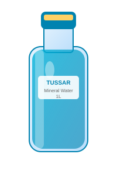
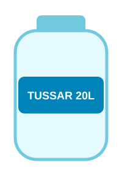
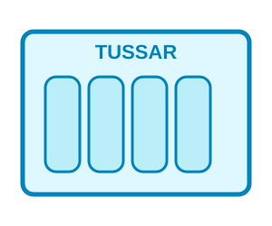

1L Bottle
₹20 per bottle
PURE • FRESH • TRUSTED
Fresh mineral water for homes, offices, events and everyday hydration.
Order NowSimple choices for every need.

₹20 per bottle

₹60 per jar

₹200 per box
Place your order and get TUSSAR delivered to your doorstep.
Book Your Order